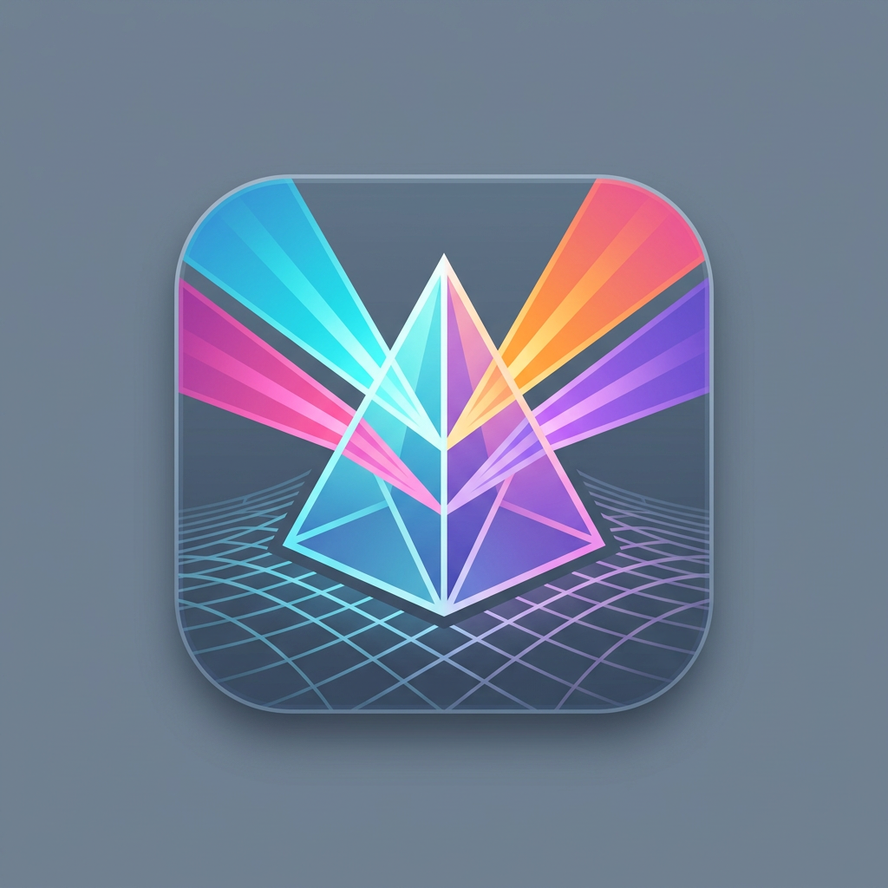

Artifact
Your portfolio command center — local-first, spec-driven.
Artifact is a local-first cross-platform desktop app that serves as a portfolio command center for multi-platform app developers. It registers, tracks, searches, and visualises projects, specs, media assets, AI generation lineage, and store analytics — without compiling or running any child application code.
Register workspace directories and Artifact automatically discovers Kiro specs, parses requirements, tasks, and design documents, then populates a four-column pipeline board showing feature lifecycle status. An interactive dependency graph visualises task hierarchies and requirement cross-references.
A built-in credit ledger tracks AI generation costs across platforms (Claude, ChatGPT, Copilot, Gemini, Midjourney, Suno, Adobe Firefly) with manual entry and CSV import. Full-text search powered by FTS5 provides instant results across all indexed content.
Key Features
- 📅 Pipeline Board (4-column Kanban)
- 📈 Dependency Graph (React Flow)
- 🔍 FTS5 Full-Text Search
- 💰 Credit & Cost Ledger
- 📂 Kiro Spec Parser
- 🔌 Git Branch Detection
- 📱 Context Slider (detail panel)
- 💾 SQLite (local-first)
- ⚡ Cmd+K Command Palette
Built with: Electron • React 19 • TypeScript • Tailwind CSS 4 • Vite • better-sqlite3 • React Flow • Zustand • recharts